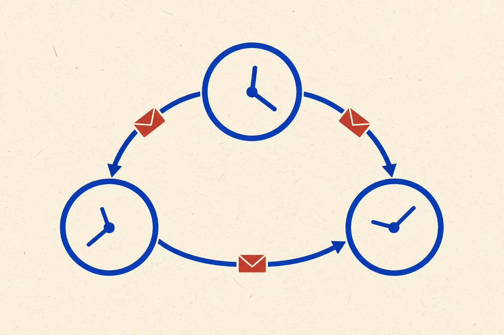

How do independent machines, with no shared clock, no shared memory and no guarantee of staying up, behave as one system?

What a distributed system is, and the two contexts it lives in: time and space.
What exactly makes a computational system distributed, and what should a distributed system achieve to be worth its cost?
When there is no shared “now”, what can the processes of a distributed system still agree on?
If being distributed means being in different places, what does it take to compute with space, and to move computation through it?
Surviving faults, keeping copies consistent, and agreeing despite both.
When part of a distributed system fails, what does it take to bring the whole system back to a correct state?
Once data lives in several copies, what may a reader see, and what must we give up when the network splits?
Can unreliable processes on an asynchronous network always reach the same decision? If not, what can they still guarantee?
If many distributed applications need consensus, can it be offered once, as middleware, instead of being rewritten for each?
Describing distributed systems precisely, and running them for real.
How do we represent a distributed system so that we can compare designs, and then prove something about how it behaves?
How do you keep a distributed application available, scaled and up to date while its containers and machines keep failing?